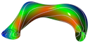

- Generated by
 1.9.8
1.9.8
 |
Stellarator-Tools
|
Defines the routines that set the boundary of a run from its input coefficients and orient the poloidal angle so that the Jacobian takes the sign VMEC assumes. More...
Functions/Subroutines | |
| subroutine | flip_theta (rmn, zmn, lmn) |
| Flip the poloidal angle, theta -> pi - theta. | |
| subroutine | reset_boundary |
| Set the internal boundary of a run from its input coefficients. | |
Variables | |
| logical | lflip |
| True when reset_boundary flipped theta -> pi - theta because the boundary was given with the opposite orientation. profil1d negates iotas and chips to match. | |
Defines the routines that set the boundary of a run from its input coefficients and orient the poloidal angle so that the Jacobian takes the sign VMEC assumes.
| subroutine init_geometry::flip_theta | ( | real(rprec), dimension(0:ntor,0:mpol1,ntmax), intent(inout) | rmn, |
| real(rprec), dimension(0:ntor,0:mpol1,ntmax), intent(inout) | zmn, | ||
| real(rprec), dimension(0:ntor,0:mpol1,ntmax), intent(inout), optional | lmn | ||
| ) |
Flip the poloidal angle, theta -> pi - theta.
Multiplies the cos(m*theta) amplitudes by (-1)^m and the sin(m*theta) amplitudes by (-1)^(m+1), which reverses the direction theta runs around each surface and with it the sign of the Jacobian. The m = 0 amplitudes are unchanged.
| [in,out] | rmn | Fourier amplitudes of R, indexed by n, m and parity. |
| [in,out] | zmn | Fourier amplitudes of Z, indexed by n, m and parity. |
| [in,out] | lmn | Fourier amplitudes of lambda, indexed by n, m and parity. Optional. |
| subroutine init_geometry::reset_boundary |
Set the internal boundary of a run from its input coefficients.
Fills rmn_bdy and zmn_bdy from the input coefficients rbc, zbs, rbs and zbc, sets lflip and signgs, and flips a boundary given with the opposite orientation with flip_theta. The orientation is the sign of the m = 1 determinant at zeta = 0,
SUM(rbc(:,1))*SUM(zbs(:,1)) - SUM(rbs(:,1))*SUM(zbc(:,1)),
whose second term is absent without lasym and which no rotation of theta changes. For lasym the coefficients are first rotated in theta so that RBS(m=1) = ZBC(m=1) holds after the flip. The rotation changes rbc, zbs, rbs and zbc in place, and a second call finds a rotation angle of zero to round-off. Called by readin, and again by any caller that changes the boundary coefficients.